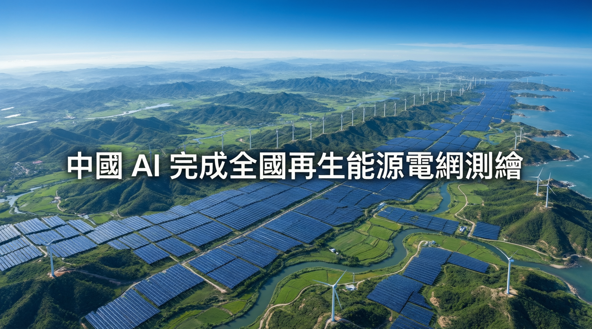

Nature 研究：北京大學+達摩院識別 41 萬設施，各國應該關注

研究由北京大學和阿里巴巴達摩院研究人員在《Nature》期刊發布，使用深度學習模型分析亞米級衛星影像，識別中國太陽能和風力設施。
「這項庫存讓中國能夠以『上帝視角』俯瞰其新能源版圖。」
— 劉宇教授，北京大學地球與空間科學學院團隊識別了中國 31.9 萬個太陽能光伏設施，覆蓋全國 1,915 個縣級行政區。
同步測繪了超過 9.1 萬颱風力渦輪機，處理了 7.56 TB 的衛星影像數據。
深度學習模型訓練於亞米級解析度衛星影像，從屋頂光電板到蒙古高原風電場都能識別。
研究證實：設施距離越遠，互補效果越強，甘肅的陰天不會影響內蒙古的風電廊道。
| 地區/指標 | 數據 | 說明 |
|---|---|---|
| 中國 Q1 電力消耗 | +44% 按年 | 2026年首季達 229 億千瓦時 |
| 全球數據中心預測 | ~1,000 TWh | IEA 預測 2030 年前達標 |
| 美國 PJM 容量價格 | 10 年內升 10 倍 | 數據中心增長為主因 |
| 中國清潔能源產值 | 15.4 萬億元 | 相當於巴西全國 GDP |
中國透過 AI 測繪全國再生能源設施，解決了「電網操作者無法優化他們不知道的東西」的根本問題。當前各國正處於 AI 用電爆炸式增長的臨界點，這項測繪能力讓中國在整合再生能源方面領先全球。清潔能源已成為中國經濟支柱（15.4 萬億元，巴西 GDP 規模），這個「上帝視角」將進一步提升其能源安全和電網效率。
這項研究不僅是中國的成就，也為其他國家提供了模板。通過大範圍地理 AI 測繪基礎設施，各國可以更有效地協調再生能源，穩定電網並減少棄風棄光。中國的清潔能源經濟產值已相當於巴西全國 GDP，這種規模的管理需要同樣規模的技術工具。